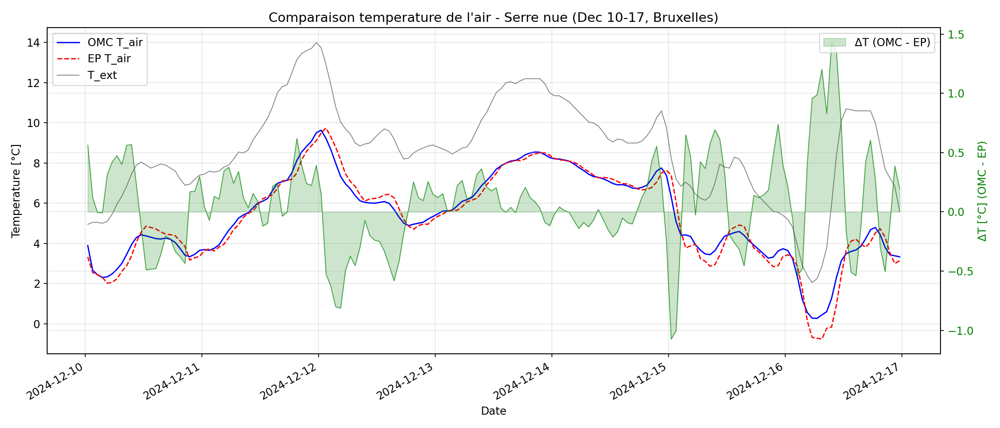
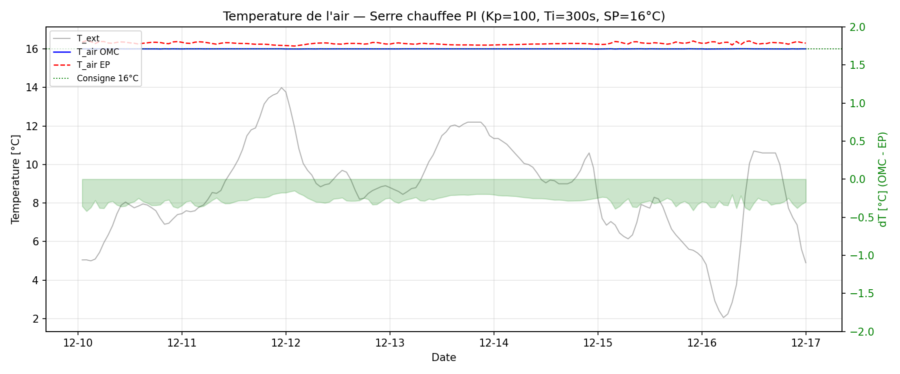
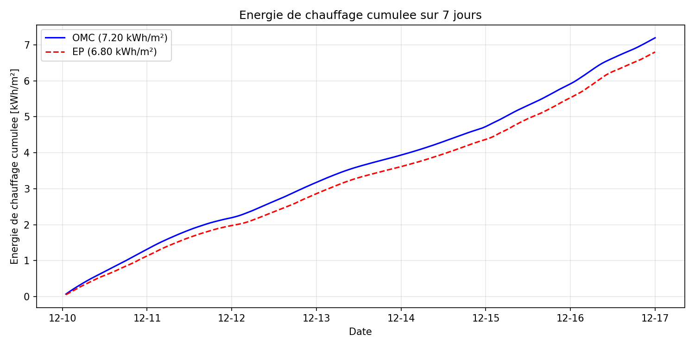
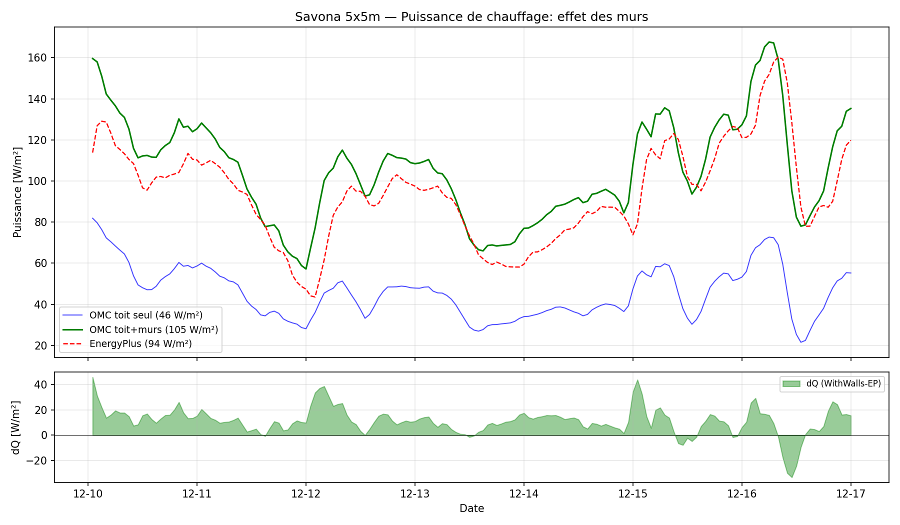
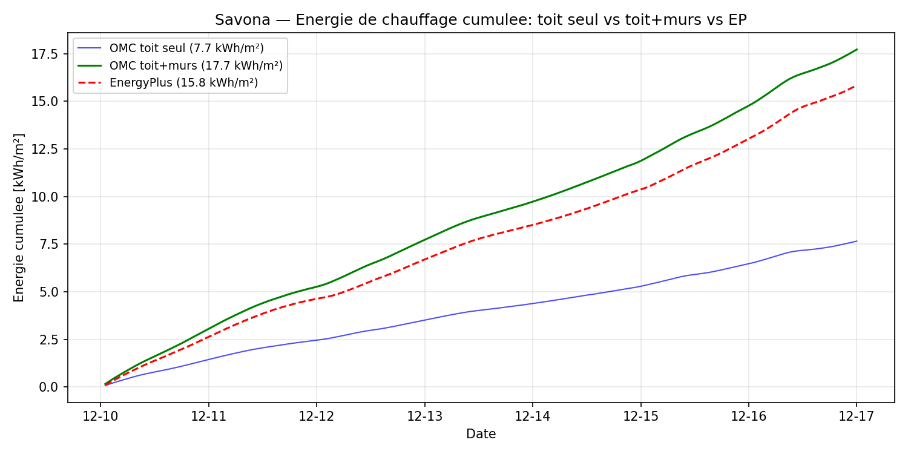
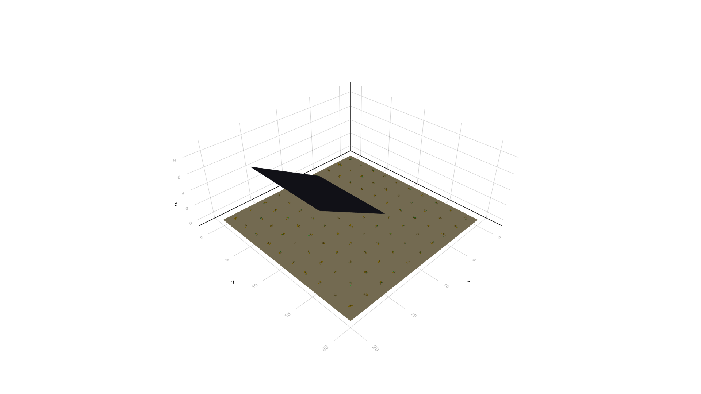
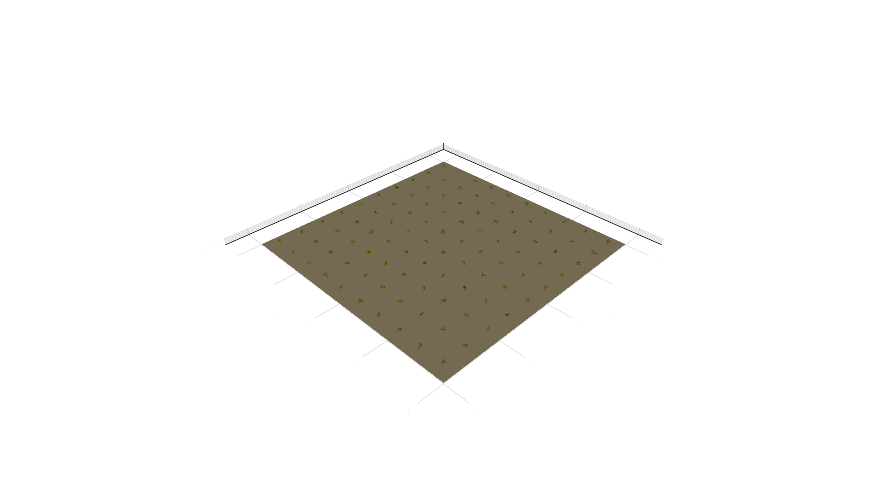
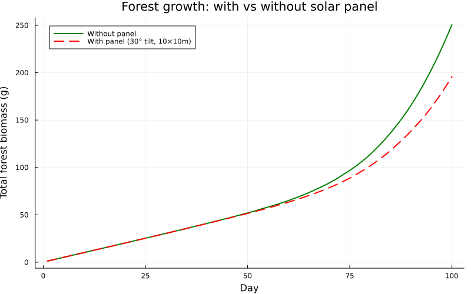
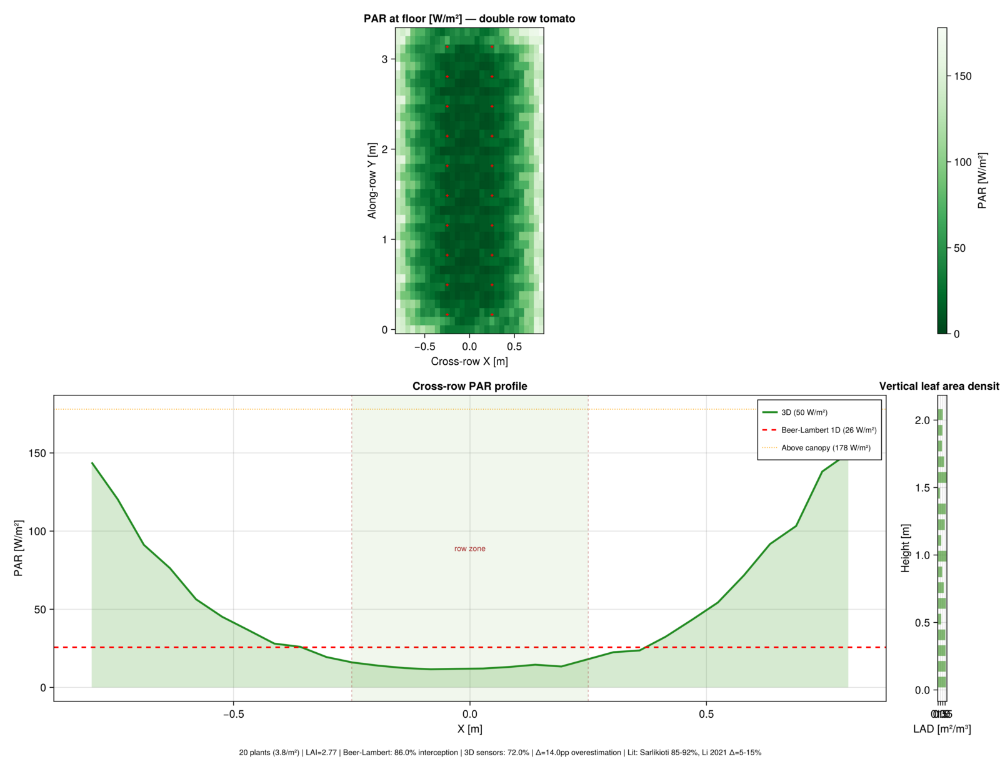

A Julia greenhouse–crop–HVAC simulator, its EnergyPlus cross-validation,
and a computer-vision pipeline that closes the calibration loop.
Melchior Duchaufour · ERMESS GREEN project · LOCIE / DIME
Envelope physics
Climate & HVAC
FSPM & PlantBiophysics
EnergyPlus cross-validation
SAM 3 / YOLO LAI tracking
02
Three axes, one greenhouse
I
Envelope & HVAC
physics simulator
Modelica → Julia port (GreenhousesJL)
Walls, view factors, multi-bounce solar added
Cross-validation against EnergyPlus 25.1
50–100× faster than OpenModelica / EP
ValidatedII
Crop biophysics
VPL · PlantBiophysics · Vanthoor
3D FSPM (VPL) for agrivoltaic shading
FvCB + Medlyn + Stanghellini per leaf
Two-level architecture: detailed → simplified
Vanthoor K calibration via ray-traced PAR
In progressIII
Computer vision
YOLO + SAM 3 + tracking
YOLO 26x detection, mAP50 = 95.2 %
SAM 3 zero-shot leaf segmentation
Temporal tracking + growth curves
FastAPI webapp · WUR dataset
Operational
03
Why model a greenhouse?
A greenhouse is a small, tightly coupled physical system
where every subsystem changes the state of every other.
The envelope filters solar gains and leaks heat
to the sky, determining indoor climate.
The crop consumes light, transpires water and
releases latent heat, modulating the air balance.
HVAC, ventilation and screens push back to keep
the climate inside biological setpoints.
Energy is the dominant operational cost
, and the leverage point for decarbonisation.
Treating any subsystem in isolation gives wrong answers.
A full library is needed.
04
Greenhouses Modelica library, architecture
Five layers compose into a runnable greenhouse simulation. Each layer
depends only on the layer above.
Reference: Altes-Buch et al. Modelica Conf. 2019.
05
Modelica baseline vs the Julia rewrite
FeatureModelicaJuliaFeatureModelicaJulia
Cover & floor balance
complete
ported
Lateral walls (4 façades)
absent
added
Soil column (Kusuda BC)
3 °C constant
EPW Kusuda
Multi-layer NIR (cov+can+flr)
MultiLayer_TauRho
ported
View factor sky / ground
constant 0.5 / 1
geometric tilt
Wall solar gain (4 cardinal)
N/A
Liu-Jordan + Erbs
External cover convection
Bot forced only
+ McAdams natural
PV panels
absent
opaque/semi/trans
Canopy energy balance
Stanghellini
+ night rs fix
Stomatal dynamics
steady P-M
opt. Vialet-C.
Crop catalogue
3 species
6 species
Beer-Lambert K(LAI, age)
K_PAR=0.7 const
FSPM-calibrated
FSPM in the runtime loop
no
no, K only
Ventilation control
Boulard 95
+ T+RH 2003
Solver
DASSL 250 ms
Tsit5 4 ms
EnergyPlus benchmark
3 winter cases
+ 9 summer cases
06
GreenhousesJL: the Julia rewrite
A complete Julia port that keeps the Modelica equations and adds
everything the original library was missing.
One component = one physical object
with explicit ports.
Heat, vapour and CO₂ travel through typed connectors
, the air node sees every flux at once.
Climate, equipment and crop submodels are swappable
without rewriting the rest.
The same equations describe a 25 m² Savona prototype and a
14 000 m² Venlo glasshouse.
Built on OrdinaryDiffEqTsit5, adaptive Runge-Kutta
5, JIT-compiled, in-memory weather interpolation.
A 7-day simulation that takes 250 ms in OpenModelica or 410 ms in
EnergyPlus runs in 3–5 ms in GreenhousesJL on
the same machine.
GreenhousesJL
src/GreenhousesJL.jlEnvelope, soil, walls, ventilation, CO₂, PI controller
src/tomato_fspm.jl · cucumber_fspm.jlPhytomer-level FSPM with growth + senescence
src/heating_systems.jl · controller.jlCHP · HP · pipe network · ideal & realistic PI
src/raytracer.jl · bvh.jl · directional_light.jlMonte Carlo + BVH for K calibration
Combined forced + natural convection (DOE-2 quadratic), faithful
port of the Modelica multi-layer NIR composition, plus an
explicit cover-to-ground IR term that the original library
lumped into the sky exchange.
The Modelica default 276.15 K (3 °C) silently turned the soil
column into a sink. Now derived per-EPW for the day of year, at
the actual depth of the soil discretisation.
The original Stanghellini rs formula left stomata
partly open at night. On a basil canopy with LAI = 4, λE
reached 90 W/m² of phantom transpiration warming the air.
Closing the stomata below the PAR threshold restores 2 W/m².
Three terms heat the cover (Q_sol, Q_cnv,air, Q_rad,flr), three cool it (Q_cnv,out, Q_rad,sky, Q_rad,grd).
The dominant night loss is the radiation to the cold sky (~28 W/m²). The cover-to-ground term was missing in the original Modelica formulation and is added by GreenhousesJL.
Term 1 of 6
Qsol
W · solar absorbed by glass
Qsol = αcov · Iglob · A
Glass absorbs about 3 % of the incoming solar (PAR + NIR). Most of the energy passes through to the canopy and floor.
Term 2 of 6
Qcnv,air
W · air → cover convection
Qcnv,air = hint · (Tair − Tcov) · A
Free convection inside the greenhouse (Balemans 1989). hint ≈ 1.7 · |ΔT|0.33 on the inclined cover.
Term 3 of 6
Qrad,flr
W · floor → cover IR
Qrad,flr = εflr·εcov·σ·A·(Tflr4 − Tcov4)
The warm floor radiates IR up to the cooler cover. Strong on sunny days when the floor reaches 50 °C.
DOE-2 quadratic combination of forced (Bot 1983, wind-driven) and natural (McAdams, buoyancy) convection. Pure-forced under-estimates losses at low wind by ~30 %.
Term 5 of 6
Qrad,sky
W · cover → sky IR
Qrad,sky = εcov·Fsky·σ·A·(Tcov4 − Tsky4)
The dominant loss mechanism at night, around 28 W/m² in winter. Fsky = (1 + cos φ)/2 from geometry.
Term 6 of 6 new
Qrad,grd
W · cover → ground IR
Qrad,grd = εcov·(1−Fsky)·σ·A·(Tcov4 − Tout4)
The complement of the sky view factor. The original Modelica library lumped this into the sky term, which over-estimated the cooling on tilted covers and walls.
The indoor air is the central hub of the model. It sees every other node, the floor, the cover, the walls, the canopy, the heater and the outside through ventilation.
Three terms heat the air (floor convection, solar through obstacles, heater), four cool it (cover, walls, canopy, ventilation).
Term 1 of 7
Qcnv,flr
W · floor → air convection
Qcnv,flr = hflr · (Tflr − Tair) · A
Bidirectional Balemans 1989: hup = 1.7·|ΔT|0.33 when the floor is hotter than the air, hdown = 1.3·|ΔT|0.25 when it is colder.
10 % of the incoming solar is absorbed by greenhouse construction obstacles (trusses, gutters, dust, internal pipes) and re-released as a sensible heat source to the air rather than reaching the floor.
Term 3 of 7
Qheat
W · PI controller demand
Qheat = clip0..Qmax(Kp·e + Kp/Ti·∫e·dt)
Identical PI in OMC and EP, ideal continuous mode. Realistic mode adds dead band, part-load degradation and a startup ramp.
Term 4 of 7
Qcnv,cov
W · air → cover
Qcnv,cov = hint · (Tair − Tcov) · A
Free convection on the inclined cover. hint = 1.7·|ΔT|0.33·cos(φ)−0.66.
Beer-Lambert intercept on PAR plus the Modelica multi-layer NIR composition. K is the open question: in Modelica K_PAR = 0.7 and K_NIR = 0.27 are constants, but ceptometer measurements show K varies with growth stage and row geometry from ~0.45 to 0.71.
Term 2 of 4
H
W · sensible heat to air
H = ρcp/ra · LAI · (Tcan − Tair)
Negative at night when Tcan < Tair: the canopy then receives heat from the air. Drives a 3 to 5 °C night depression below the air temperature.
rs = 5000 s/m below 5 µmol PAR (closed stomata at night), rs = rs0(1 + 200/(PAR+50)) during the day.
Basil λE night: 90 W/m² → 2 W/m²
Term 4 of 4
Qrad,can→cov
W · IR loss to cover
Qrad,can→cov = εcan·εcov·σ·A·(Tcan4 − Tcov4) · FF
FF = 1 − e−0.94·LAI is the canopy view factor. The cold cover at night drives this loss and creates the Tcan depression observed in greenhouses.
13
Impact 1, the soil sink that changed everything
The Modelica library defaults the deep ground temperature to 276.15 K
(3 °C, winter Brussels). In a sealed July greenhouse this silently turned
the soil into a heat sink and capped overheating.
Before · Tdeep = 3 °C const
+5.9 °C
mean greenhouse overheat for sealed Lyon July (14 000 m²).
The Kusuda undisturbed soil at 1.3 m in July is 13.8 °C. Using
3 °C steals 60–80 W/m² from the floor through the soil column at
steady state.
After · kusuda_t_deep_from_epw()
+19 °C
mean overheat, in the band reported by Boulard & Baille for sealed Mediterranean houses.
Per-EPW Kusuda profile at the depth of the soil discretisation,
for the day of year of the simulation. One-line API:
kusuda_t_deep_from_epw(epw; depth=1.3, day_of_year=182).
+13
This was the unlocking fix. Without it, every other solar/convection
improvement was masked by the cold-soil bias.
14
Impact 2, multi-layer NIR distribution
The Julia version originally absorbed only 39 % of incident solar at the
floor, the rest was just lost. Porting the Modelica
MultiLayer_TauRho.mo closes the budget.
Before · single-pass Beer-Lambert
39 %
of Iglob ends up absorbed inside the greenhouse.
Floor 39 %, cover 2 %, air 0 %. The remaining 60 % is silently
dropped by the model. Mean overheat: +6 °C.
After · MultiLayer_TauRho port
87 %
absorbed inside, with explicit cover/canopy/floor multi-bounce.
Floor 74 %, RSunAir 9 %, cover 3 %, canopy 1 %.
Reflected back outside: 13 %. Mean overheat: +19 °C,
inside the EnergyPlus tolerance (+22.8 °C).
2.2×
The fix was a faithful Julia port of the existing Modelica function.
The bug was in the simplified version, not in the Modelica reference.
15
Impact 3, the lateral walls (Savona case)
Savona is a 5 × 5 × 4 m experimental greenhouse with 50 m² of glass walls
against 25 m² of floor. The Modelica library models only the roof.
Before · roof only
−52 %
heating energy gap vs EnergyPlus for the same week.
Q̄heat = 46 W/m²
Ueff = 4.9 W/(m²·K)
Lossy area = 25 m² (roof only)
After · walls + Walton + Holman
+12 %
residual gap, of opposite sign, within engineering tolerance.
Stanghellini's rs kept stomata partly open at night
(130–250 s/m). The bug was invisible on most crops, but it surfaced
on the highest-LAI canopy of the catalogue (LAI = 4), where the phantom
transpiration was big enough to dominate the air balance.
Before · rs ≈ rs0 at night
90 W/m²
night-time λE on the LAI = 4 canopy — physically impossible.
Phantom transpiration cooled the canopy below the air, so
Tcan < Tair → H < 0 → the air
"received" heat from the canopy. Result:
Qheat dropped to 0 W/m².
After · rs = 5000 s/m below 5 µmol PAR
2 W/m²
night-time λE, inside the Stanghellini 1987 measurement range (5–20 W/m²).
Qheat climbs back to 108 W/m², in line
with the other 5 crops of the catalogue (107–109 W/m²)
under the same 7-day Brussels December scenario.
−45×
Found by running the same Savona heated case for the 6 crops of the
catalogue (tomato, lettuce, cucumber, pepper, strawberry, basil) and
noticing that the highest-LAI one was the only outlier. λ
is the latent heat of vaporization of water (≈ 2.45 MJ/kg);
λE is the heat carried away by transpiration in W/m².
rs is the stomatal resistance, not the latent heat.
HeatStorageWaterHeater, multi-cell 1-D
tank with internal/external HX.
PCMStorage, phase-change material with
hysteresis (paraffin floors, salt-hydrate walls).
Control
PI loops on screen, ventilation, lighting and dispatch ,
the same controllers used in commercial climate computers.
Realistic mode adds dead band, part-load degradation, startup ramp.
Crop submodels (Vanthoor heritage)
Crop
Reference
Specifics
Tomato
Vanthoor 2011
50-stage fruit, Tsum = 1035 °C·d
Lettuce
van Henten 1994 / Seginer 1991
vegetative, Topt ≤ 22 °C
Cucumber
Marcelis 1994
30-stage fruit, faster growth coef.
Pepper / strawberry
generic source-sink
switchable parameters via record
All crops inherit BaseCropModel, same R_PAR / CO₂ /
Tcan inputs, same LAI / MC_AirCan / DM_Har outputs.
→ These models are static: a fixed source-sink with
no organ-level resolution. They cannot capture PV-shading
heterogeneity. Hence axis II.
18
Why benchmark against EnergyPlus?
EnergyPlus is the most widely audited building simulation engine in
the world. It is not true, but it is
independently true.
Independent solver (CTF), no shared code
path with the Modelica equations.
Independent correlations for convection (TARP,
DOE-2) and LW radiation.
Decades of validation against ASHRAE 140, IEA
test cases, real buildings.
Open-source & weather-data compatible, same TMY EPW
fed to both tools removes a major degree of freedom.
Cross-tool comparison surfaces issues that no single model can
self-detect, including the ones I'll show next.
19
Benchmark methodology: three test cases
A
Bare 14 000 m² Venlo
Single 1 mm glass cover, no plant, no heating
Tests radiative subcooling
Isolates the envelope physics from controllers
B
Same envelope, PI-heated to 16 °C
Identical PI: Kp=100, Ti=300 s, Qmax=200 W/m²
Tests energy demand & control loop coupling
EP needs Δt=1 min, revealed by PI lag
C
Savona 5×5 m experimental
Geometry from Boccalatte et al. 2021
Tests scaling limits of the envelope assumptions
Surface ratio and wall fraction matter
Same TMY weather, same setpoints, same geometry, identical solar inputs.
Three increasing levels of stress on the model.
20
Case A: bare greenhouse, radiative subcooling
The bare 14 000 m² greenhouse drops 3.3 °C below outside
temperature at night, a textbook radiative subcooling
regime where the cover radiates to a cold sky much faster than
convection can refill it.
Variable
RMSE
Bias
R²
Tair
0.40 °C
+0.07
0.972
Tcover
0.58 °C
+0.17
0.968
Tfloor
0.27 °C
+0.13
0.978
Mean nocturnal cover-to-sky LW loss: +27.7 W/m²,
partially offset by outdoor convection −30.3 W/m².
Net: −2.6 W/m². The two engines agree on every component.
→ Sub-degree agreement across the entire envelope.

Tair OMC (blue) vs EP (red) vs Tout (grey), 7-day Brussels December.
21
Case B: PI-heated, energy & controllability
With identical PI controllers, both tools track the 16 °C setpoint.
OMC is continuous; EP discretises at Δt = 1 min,
which forced a setpoint adjustment.
OMC
EP
Δ
Tair mean
16.00
16.28
−0.28 °C
Tair RMSE
0.29 °C
bias −0.28
Qheat
42.8
40.5
+2.3 W/m²
Energy (7 d)
7.20
6.80
+5.8 %
Ueff
6.1
5.5
+0.6 W/(m²K)
→ Sub-degree Tair, ~6 % energy gap on a fully-coupled
control loop, well within inter-tool noise.
A first attempt at Δt = 10 min in EP gave bang-bang oscillation
(Tair ≈ 22 °C). Reducing to 1 min resolved it.
OMC's adaptive DASSL solver did not need tuning.

Tair tracking the 16 °C setpoint.

Cumulative heating energy: OMC 7.20 vs EP 6.80 kWh/m².
22
Case C: Savona, the scaling limit
On the 5×5 m Savona prototype, Qheat diverges by
−52 %. Drilling in: Tair still matches
to 0.10 °C RMSE. The discrepancy is structural,
not numerical.
OMC roof
OMC + walls
EP
Qheat
46
106
94 W/m²
Energy 7 d
7.7
17.7
15.8 kWh/m²
ΔE vs EP
−52 %
+12 %
ref
Ueff
4.9
11.5
10.2 W/(m²K)
The library was originally written for industrial Venlos where
walls are ≲ 3 % of the envelope. Savona breaks that assumption.
Adding a lumped wall node closes most of the gap.
The residual +12 % comes from the uniform Fsky = 0.5 view
factor (EP computes per-surface geometry).
→ Known limitation: GreenhousesJL adds the wall node; the original
Modelica library still needs SideWall.mo.

Adding walls (green) closes the gap with EnergyPlus (red).

−52 % → +12 % once the wall node is in place.
23
Cross-validation sweep: 3 sizes × 3 climates
Once the wall, view-factor and convection fixes were in, I re-ran the
bare envelope on 9 (size, climate) combinations against
EnergyPlus 25.1 with a matched 60-day warmup.
Sealed greenhouse, dark concrete floor (α = 0.93), window glazing
τPAR = 0.89, Kusuda monthly ground T per EPW.
Climate
Size
EP Tair mean / max
JL Tair mean / max
EP ΔT mean
JL ΔT mean
EP − JL
Lyon, FR
small (25 m²)
35.5 / 57.1
37.0 / 58.9
+13.6
+15.1
−1.6 °C
Lyon, FR
medium (1 000 m²)
41.1 / 64.5
42.3 / 68.0
+19.2
+20.4
−1.2 °C
Lyon, FR
large (14 000 m²)
43.7 / 68.5
44.5 / 71.6
+21.9
+22.6
−0.7 °C
Chambéry, FR
small
31.5 / 54.9
33.6 / 54.1
+12.6
+14.7
−2.1 °C
Chambéry, FR
medium
35.8 / 61.2
38.6 / 63.7
+17.0
+19.7
−2.7 °C
Chambéry, FR
large
37.9 / 64.8
40.6 / 67.5
+19.0
+21.7
−2.7 °C
Almería, ES
small
41.7 / 56.6
41.5 / 57.0
+15.8
+15.5
+0.3 °C
Almería, ES
medium
46.4 / 64.4
47.9 / 68.2
+20.5
+21.9
−1.5 °C
Almería, ES
large
48.6 / 68.1
50.5 / 72.6
+22.6
+24.5
−1.9 °C
All 9 cases agree within ±2.7 °C in mean.
Best on Almería (windy Mediterranean, ±0.3 to 1.9 °C),
worst on Chambéry (sheltered alpine valley, July wind 2.1 m/s ,
Bot 1983 vs TARP differ most at low wind).
24
What the benchmark says, and what it doesn't
Validated
Sub-degree air, cover, floor and soil temperatures across all 12 cases (3 winter + 9 summer)
Radiative subcooling regime, both engines reproduce −3.3 °C
PI control loops on the energy balance
Cover–sky LW dominance (~28 W/m² nightly)
Energy demand on industrial-scale geometry (≈ 6 % gap)
50–100× speedup vs OMC and EP, same physics, faster runtime
Known limitations
The original Modelica library still has no walls, only GreenhousesJL does
EP cannot run with Δt > 1 min when PI loops are aggressive
~2.7 °C residual on small alpine-valley greenhouses (TARP vs Bot 1983 at low wind)
Internal solar redistribution simplified to "all on the floor" + multi-bounce factor
Crop sub-model still static Vanthoor, no organ-level resolution
Cross-validation buys confidence on shared physics,
not absolute truth. It also exposes where the library was scoped ,
and where it should grow next.
25
Going beyond a static crop: the agrivoltaic case
Vanthoor's source-sink model treats the canopy as a single
well-mixed compartment with one LAI value. That works for a flat
horizontal layer of homogeneous shading.
Once you put PV panels above the rows, the assumption breaks:
some leaves see direct PAR, others sit under a moving shadow,
and the time constants of stomata interfere with the time
constants of the shading pattern. A spatially-explicit FSPM is
needed to quantify the bias, then the result is
baked into the source-sink for production runs.
Why this matters
Dense PV layouts can drop direct PAR by 40 %.
Heterogeneous shading changes which leaves dominate
transpiration.
Penman-Monteith was designed for open-field conditions and
over-estimates ET in a covered greenhouse.
→ Need a level of detail Vanthoor cannot reach, without losing
the speed of the source-sink approach for seasonal optimisation.

VPL 3D scene at day 100: virtual forest + 10×10 m PV panel
(30° tilt, 3.5 m height, ρ = 0.10).
26
Two-level architecture: calibration vs production
L1
Reference: VPL + PlantBiophysics.jl
3D FSPM with phytomers, leaflets, fruits
Monte Carlo ray-tracing on the actual scene geometry
FvCB + Medlyn + Stanghellini per leaf
Heavy: minutes per simulated season
Role: produce reference data for any new
agrivoltaic configuration, then calibrate L2.
L2
Production: GreenhousesJL crop sub-model
Source-sink Vanthoor / Marcelis form
Beer–Lambert canopy with calibrated K(LAI, age)
Coupled to envelope, HVAC, ventilation, CO₂
Fast: seconds per simulated season
Role: seasonal optimisation of heating
setpoints and dispatch under agrivoltaic constraints.
Coupling between the two levels
Level 1 simulates a few seasons under representative weather and PV
configurations, producing reference (LAI, An, Tr,
biomass) trajectories. Level 2 inherits four interface variables
, q̇PAR,Can, TCan,
ṁv,CanAir, ṁc,Can ,
whose response curves are fitted to L1. Once fitted, L2 runs at the
speed required for control optimisation.
Inspired by Rémi Vezy's PlantBiophysics.jl architecture and the discussions
with the CIRAD/CEA team (PhD Corentin Coutellier).
27
VPL: first agrivoltaic numbers
A virtual-forest VPL tutorial was adapted with a 10 × 10 m solar
panel (30° tilt, 3.5 m above the ground, Lambertian
ρ = 0.10). 100 simulated days, with and without the panel, on the
same weather and same plant population.
Metric
No panel
With panel
Δ
Mean PAR intercepted
ref
−26 %
−26 %
Total biomass at D100
ref
−22 %
−22 %
Run time
~3 min / 100 days
VPL Monte Carlo
The PAR drop translates almost linearly to biomass at this stage
, consistent with the linear PAR-use efficiency of young
tomato canopies before flowering. At reproductive stages the
coupling becomes non-linear (sink limitation, fruit pruning) and
this is where Level-1 calibration becomes indispensable.
→ Provides per-leaf PAR fields the simplified
model cannot generate on its own.

Day 100, control: no PV panel.

Total biomass (g DM) vs day, control vs PV.
28
PlantBiophysics: Penman-Monteith vs Stanghellini
PlantBiophysics.jl ships with the Monteith (2013) energy balance,
formulated for an open-field canopy. In a covered greenhouse it
systematically over-estimates evaporative demand
because it ignores:
The reduction of net radiation by the cover and any
intermediate screen / PV panel.
The near-saturation of indoor air, which damps
VPD-driven transpiration.
Long-wave exchanges between the canopy and the structure.
Stanghellini (1987) was developed precisely for greenhouse
conditions and does the right thing.
rs from Medlyn (2011) stomatal model
already in PlantBiophysics.jl.
Rn includes the cover/screen LW exchange, the
greenhouse-specific term Penman-Monteith lacks.
ra from canopy aerodynamics inside a still air zone.
→ Drop-in replacement: same Medlyn rs, swap the energy
balance only.
Pipeline
29
Coupling architecture: how the levels meet
The interface between Level 1 (VPL + PlantBiophysics) and Level 2
(GreenhousesJL crop sub-model) is exactly four variables. Each one is
what the simplified Vanthoor model already exposes today, but its value
has to be modified to account for the heterogeneous shading and time
constants the simplified model cannot resolve.
Coupling variable
Meaning
Why Level 1 must compute it
q̇PAR,Can
PAR absorbed by the canopy [W/m²floor]
Affected by 3D PV shading geometry, not by a single k.
TCan
Mean leaf temperature [°C]
Result of leaf-level energy balance with cover/screen IR, not a
canopy-averaged Stanghellini.
ṁv,CanAir
Vapour flux from crop to air [kg/(m² s)]
Heterogeneous stomatal aperture under PV flicker, lagging by
5–30 min (Vialet-Chabrand 2013).
ṁc,Can
Net CO₂ assimilation [µmol/(m² s)]
Per-leaf FvCB integrated over the actual PAR field, not over a
homogeneous LAI layer.
Once Level 1 has produced response surfaces for these four variables on a
reference grid (LAI, Tair, RH, CO₂, PV-shading-fraction),
Level 2 plugs them in as look-up corrections on top of
the standard Vanthoor equations, preserving its second-per-season
runtime.
30
K is not a constant
The Modelica library hardcodes K_PAR = 0.7 and
K_NIR = 0.27 for every species and every growth
stage. Published measurements show K varies by a factor of 4.
Wiechers 2014, Merlice: K decays from 0.71 (LAI 0.92) to 0.45 (LAI 3.32), measured at the ceptometer.
Li 2021, cucumber: K = 0.255, less than half the tomato baseline.
Sarlikioti 2011 cross-check: 77 % interception at LAI 3.1 ⇒ equivalent K = 0.474, on the Wiechers curve.
31
Step 1: FSPM compound leaf mode
First attempt: build a vtc Merlice tomato FSPM in Julia and
ray-trace its 3D geometry, replacing each compound leaf by an
elliptical envelope with effective τ.
Validated against Wiechers Merlice 4 stages: |ΔK|mean drops from 0.225 (fixed-leaflet baseline) to 0.07 (compound).
Limitation: still under-estimates planophile cultivars (Momotaro: simulated 0.32 vs measured 0.99) because the leaflet angles alone do not modulate Spitters diffuse extinction enough.
32
Step 2: pivot to published calibration
The FSPM compound mode is honest but still wobbles on cultivars it
cannot resolve. Pivot: drop the FSPM as the source of K and fit it
directly from the published measurements.
For a 1 000 m² greenhouse this means a few kW (Ringyoku) up to
~100 kW of misallocated solar gain (cucumber), straight
into the energy balance and the heating demand.
34
FSPM tomato build, Sarlikioti 2011 + vtc Merlice
The FSPM lives in src/tomato_fspm.jl, calibrated on
de Visser 2014 vtc parameters and Sarlikioti 2011 measurements
on cv. Komeett.
Sympodial architecture: 8 vegetative phytomers, then a repeated 3V + 1G pattern with a truss on every G phytomer.
Phyllochron 37.9 °C·d, leaf area max 628 cm² at rank 8–12 (bell curve).
Schematic and parameter set inspired by Najla et al. 2009
(Botany 87, Fig. 1) and Sarlikioti et al. 2011
(Annals of Botany 107, cv. Komeett); cultivar values
read from de Visser 2014 vtc Merlice.
36
Leaflet angles along the petiole
What this means
Pair 1–2
basal, closest to the stem
32–33°
Pair 3–4
...
27–30°
Pair 5–6
middle of rachis
23–25°
Pair 7–8
...
17–18°
Pair 9–10
distal
12–13°
Pair 11–12
just before terminal
6–7°
Terminal
tip of the rachis
0°
Why it matters for K
A constant leaf angle (CONST) under-estimates light interception
in the middle canopy by 16 % under diffuse light and 7 %
under direct light compared to the explicit-angle model
(EXPL) of Sarlikioti.
The total canopy interception is the same to within 1 %, but the
vertical PAR profile is wrong. That is the bias
a single Beer-Lambert K hides.
37
Validation: ceptometers above and through the canopy
Validation protocol (Sarlikioti 2011)
Multiple cultivars grown side-by-side at the same density
3 horizontal positions: row centre, between rows, path centre
3 vertical heights: 0.50 m (low), 1.00 m (mid), 1.75 m (above the canopy)
→ 9 ceptometer points per scene, repeated over 6 weeks of growth
LAI measured destructively or by a SunScan probe to anchor the comparison
What we look for
Vertical decay: top → bottom drop should match measurement at every position
Horizontal decay: path → row drop should match (Sarlikioti measured ~50 % attenuation)
Cultivar discrimination: planophile (Momotaro) and erectophile (Merlice) should produce different vertical profiles, both reproduced by the FSPM
Slope of measured-vs-simulated close to 1 : 1 across all scenes (Sarlikioti Fig 5)
If the FSPM passes this test for several cultivars, the per-leaflet
PAR distribution it produces is trustworthy enough to drive the
calibration of the simplified Vanthoor crop model.
38
Per-leaf PAR distribution from the FSPM ray tracer

72 directional sources (Spitters cosine-weighted) over a BVH-accelerated Monte Carlo, 500 k rays per snapshot.
The PAR field is strongly bimodal: top leaves saturated, bottom leaves dark.
The mean over all leaves is what Beer-Lambert tries to capture, but it hides the heterogeneity that matters for photosynthesis (FvCB is non-linear in PAR).
What we ship as the calibration target is therefore not just K, but also the per-leaflet PAR distribution — for a future per-leaflet FvCB coupling.
→ This is what makes it possible to tell a planophile cultivar from a Merlice with the same total LAI.
39
FSPM growth, 60-day vegetative cycle
Run in vegetative-only mode (n_initial_veg = 10 000): the fruits/trusses
branch is still rough, so calibration tables are generated on the
branch where the FSPM is in its zone of confidence.
40
Remaining gaps and next steps
What ships now
src/compound_leaf.jl: compound-leaf envelope mode for the BVH ray-tracer.
src/published_K.jl: K(LAI) for 5 cultivars + cucumber, fitted from raw CSVs in data/published/.
data/calibration/: 11 CSV tables (FSPM, published, comparison) ready for GreenhousesJL or Modelica injection.
scripts/compare_BL_models.jl: produces the W/m² comparison table on demand.
What is still wrong or missing
Leaflet size: 30–70 cm² in our model vs 3–8 cm² in Sarlikioti (need intercalary leaflets).
Planophile cultivars: Momotaro is still simulated at K = 0.32 vs measured 0.99.
Per-leaflet PAR → per-leaflet FvCB: photosynthesis is currently aggregated, not propagated by ray.
Sarlikioti sensitivity sweep on the 6 architectural traits not reproduced yet.
K(LAI) injection into Modelica via CombiTable2D in Solar_model.mo (low priority: Modelica is the baseline, not the integration target).
41
Open question 2: PV shading and stomatal lag
PV on greenhouses, the modelling gap
Solar_Panel.mo and Components/PV.mo
are stubs, no shading on canopy yet.
Coupling needs shaded PAR fraction + electrical
output simultaneously.
Dense PV layouts can drop direct PAR by 40 % ,
diffuse fraction becomes the dominant signal for the crop.
Real stomata have time constants of 5–30 min
(Vialet-Chabrand et al. 2013).
Under PV shadow flicker: opening can lag light, gas
exchange becomes desynchronised, transpiration over- or
under-estimated.
Question: is the diffuse PAR floor sufficient to keep stomata
open under dense PV?, or do we need a dynamic gsw?
42
Closing the loop: measuring LAI from the camera
Calibrating Level 1 against Level 2 needs ground truth.
The 4th Wageningen Plant Growth Challenge published a
public dataset of cherry tomato grown in six high-tech greenhouse
compartments at Bleiswijk, with sensors and zenithal RGB
cameras at 5-min intervals.
Reference: Hemming et al., Sensors 2020,
"Cherry Tomato Production in Intelligent Greenhouses". Six teams,
six months of cropping, hourly photosynthesis rates from a calibrated
KASPRO + INTKAM digital twin.
Dataset facts
96 m² floor area (76.8 m² crop area) per compartment
Cherry tomato cv. Axiany grafted on Maxifort
2.6–8.0 stems/m² (variable density)
HPS + multi-spectrum LED, two screens, fogging, CO₂, two
independent heating circuits
Daily PAR sums, heating energy, biomass, leaf area, fruit yield
→ If we can extract LAI from cam_19 RGB frames, we have
one of the cleanest validation targets in the field.
Set update2 on Ultralytics Hub: 82 labelled images, 1 class
(plant). Iterative annotation targeting underrepresented difficult cases.
43
Vision pipeline: four chained Python modules
M1
Detection & Cropping
YOLO 26x via Ultralytics Deploy.
Re-projection of API boxes to full-resolution image, NMS, padded crops,
*_detections.json.
M2
Leaf Segmentation
SAM 3 with text prompts
("potted plant", "seedling", "plant").
Two-pass mask selection + morphological closing for pipe-split plants.
M3
Growth Tracking
Centroid association across timestamps (max 150 px), per-plant CSV,
mean and zone-wise growth curves, anomaly flags
(drop > 40 % between two frames).
Each module produces a JSON contract with the next, so any one can be
swapped (e.g. SAM 2 box-prompted instead of SAM 3 text-prompted) without
touching the rest of the chain.
Tomatoes / WUR
cam_19 zenithal RGB, 5-min cadence
Several days of continuous tracking
Source for the calibration loop
Pl@ntNet integration
Species ID via the public Pl@ntNet API
500 requests/day quota tracked in the webapp
Score + confidence stored alongside each crop
Anomaly handling
Senescent leaves break green-oriented prompts
Pipe-split plants merged via morphology
Drops > 40 % flagged as segmentation errors, not real shrinkage
44
YOLO: from nano to extra-large, five runs
Five fine-tuning experiments on the Ultralytics Cloud, each at
1280 × 1280 px. Two levers explained the improvements: model
capacity and dataset enrichment.
Run
Model
Dataset
mAP50
mAP50-95
exp-14
yolo26n
set1
92.3 %
58.2 %
exp-15
yolo26n
set1
92.3 %
58.2 %
exp-16
yolo26l
set1
91.2 %
57.5 %
exp-17
yolo26x
set2
94.4 %
62.3 %
exp-18
yolo26x
set2
95.2 %
64.0 %
→ A bigger model alone is not enough, recall
dropped from 85.9 % to 84.3 % between exp-15 and exp-16 because the
dataset was not yet diverse enough to feed the larger model.
Continuous dataset enrichment is the main lever.
The 82 labelled images contain greenhouses ranging from sparse pot
trays to dense canopies of dozens of plants per frame, with
irrigation pipes, labels, varied substrates, and senescent foliage.
Validation metrics across runs. Dashed line marks the
dataset-update step that explains the jump between exp-16 and exp-17.
45
SAM 3: zero-shot leaf masks under irrigation pipes
SAM 3 (Meta, 2024) is used in semantic mode via Ultralytics'
SAM3SemanticPredictor. Three text prompts are submitted at
once and a two-pass selection picks the mask that best covers the
YOLO-detected plant centre, then a morphological closing repairs masks
split by visible irrigation pipes.
Day 1, initial overlays per detected plant.
Day 4, same scene, growth visible per plant.
Blue contours faithfully delineate leaf areas even under high density and
partial occlusion by irrigation pipes. Overlap resolution assigns shared
pixels to the closest centroid, not perfect for fully entangled
neighbours, which is the open-loop bottleneck before mass calibration.
Known limitation: senescent (yellow/brown) plants respond
less well to green-oriented text prompts. SAM 2 (box-prompted, fine-tunable)
is the planned upgrade.
46
Growth tracking: first measured curves
Four days of cam_19 (4 frames per day, 02:00 / 08:00 /
12:00 / 16:00), 78 plants per image, tracked by centroid proximity.
Output: per-plant area in pixels and (once a px/cm reference is fixed)
in cm². Mean curve, zone breakdown (3 × 2 grid), anomaly flags.
What's working
Tracking is stable across days on the WUR rig
, no plant lost, IDs persistent.
Day-to-day mean leaf area trajectory matches a smooth growth
curve.
Zone heatmaps reveal heterogeneous growth across the bench
, useful for spotting irrigation imbalances.
What's not yet working
px/cm calibration is pending, need a
reference object in frame (graduated ruler, pot of known
diameter).
Senescent plants intermittently fail SAM (yellow foliage).
Tracking continuity across the full WUR season (months) not yet
validated, only days.
No comparison against the published WUR ground-truth biomass
yet.
Mean leaf area per plant across 4 days, all 78 tracked plants pooled.
Growth split by 3 × 2 zone, reveals bench-side heterogeneity.
47
ERMESS GREEN webapp, the vision frontend
A FastAPI frontend for the YOLO + SAM + tracking pipeline.
Encrypted profile authentication.
API key vault for the Ultralytics Deploy endpoint and Pl@ntNet.
Single-image and folder upload.
Crop-by-crop navigation, scores, anomaly flags.
Daily Pl@ntNet quota tracker (500 req/day).
48
GreenhousesJL documentation site, in active development
Built on Documenter.jl. The 20 tutorials are also the API smoke test:
every code block runs end-to-end at every build, so the site can never
drift from the library.
Online simulation tool for horticulturists, planned
A browser-based front end on top of GreenhousesJL, for growers
who don't write Julia.
The 3-5 ms per 7-day simulation makes it possible to host the solver
on a small server and answer "what if I change my setpoint?" in
interactive time. The same equations validated against EnergyPlus,
but exposed through a few sliders and three plots.
User stories
"Should I install PV?", drag a coverage slider 0-100 %, see expected yield drop and electricity yield over 12 months.
"What if I drop my night setpoint by 2 °C?", seasonal heating energy change, expected impact on biomass.
"Replace my old single glass with double?", U value swap, payback time.
"Add a thermal screen?", deployment schedule, energy savings, condensation risk.
Tech stack (planned)
greenhousesjl.eu (placeholder)
Genie.jl backend serving the same greenhouse_rhs! kernel used in this talk.
Stipple + StipplePlotly reactive UI: sliders trigger an in-memory Tsit5 solve and re-render the plots.
EPW database for the major French / European cities + user upload.
Pre-built crop, HVAC, screen and PV catalogues, swappable from a dropdown.
Free, open-source, no login required for the basic single-zone calculator.
The Julia speed advantage is what makes this possible: a 7-day
simulation in 4 ms means a year of simulation in ~210 ms, fast enough
to react to a slider drag in real time without queueing.
50
Roadmap & open discussion
1 Pixel-to-cm calibration on WUR images, close the LAI loop
2 Validate vision-LAI against WUR / LOCIE biomass ground truth
3 Inject FSPM K(LAI, age) into the GreenhousesJL Solar_model
4 Implement PV shading mask over the FSPM scene + canopy view
5 Replace Penman–Monteith with Stanghellini in PlantBiophysics
6 Calibrate Vanthoor coupling variables from Level 1 reference runs
7 Re-run the 9-case EnergyPlus sweep after each significant change
8 Validate on the full Boccalatte 2021 monitored Savona dataset